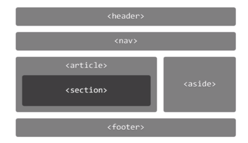

HTML5_1 Posted on 2018-09-18 HTML5新增的语义化元素 HTML的最佳实践 选择标记元素要有代表性，不要老是<div></div> 不要忘记文档类型申明 不要忘记字符编码申明，在<head>元素中应该有<meta charset='UTF=8'> 不要使用HTML5不再支持的标记，如<center>,<font>,<basefont>,<big> 不要使用HTML5不再支持的Tag属性 如table、img等标记的align和border属性，能用CSS就用CSS